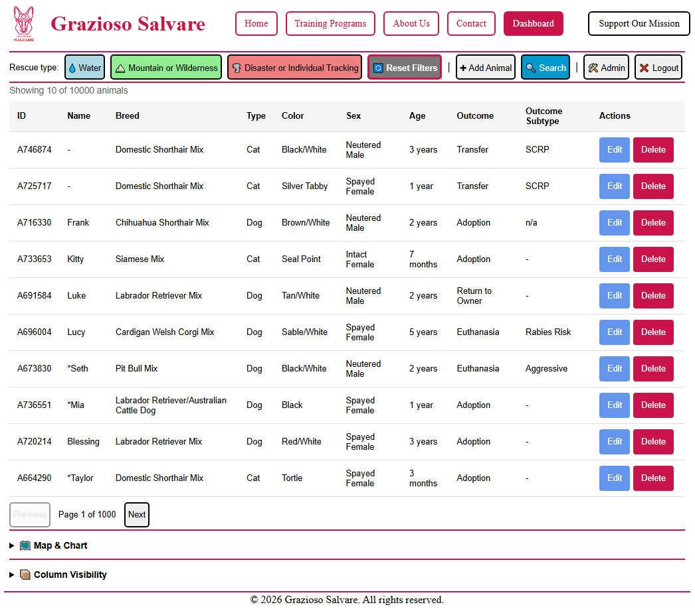
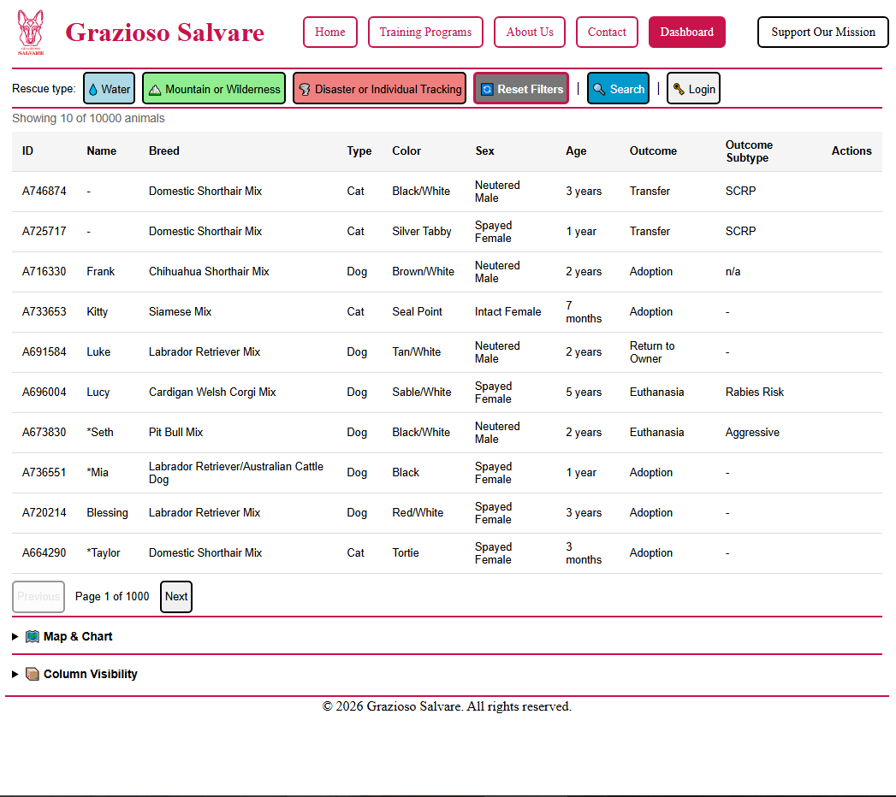
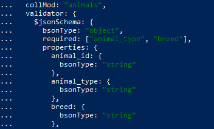

Database Design Enhancement
The database enhancement focuses on improving the data management, validation, and scalability of the Grazioso Salvare Animal Rescue Dashboard.
The original artifact used MongoDB as the primary data store. The enhancement will expand the database implementation by introducing improved validation, optimization strategies, and advanced database management practices.
Original Database Implementation
The original CS-340 project used MongoDB to store animal shelter records and provided CRUD functionality through a Python-based dashboard application.
Although the database design supported the application's requirements, additional improvements were identified to improve reliability, consistency, and scalability.
- Limited schema enforcement
- Basic database interaction patterns
- Limited data validation
- Minimal database administration features
Implemented Enhancements
JSON Schema Validation
Added MongoDB JSON Schema validation to enforce required fields, data types, and value constraints for improved data integrity.
Database Design
Redesigned the database by introducing a one-to-many relationship between animals and training records using separate collections.
MongoDB Joins
Implemented MongoDB $lookup aggregation joins to
retrieve related animal and training data while maintaining a
normalized database structure.
Role-Based Access Control
Implemented role-based access control (RBAC) to restrict administrative database operations based on user permissions.
Administrator

Public User

Skills Demonstrated
- MongoDB schema validation
- Database normalization
- One-to-many relationship design
- Aggregation pipelines with
$lookup - Role-based access control (RBAC)
- Database administration

Supporting Evidence
The following documentation provides additional details about the database enhancements implemented during the capstone project.